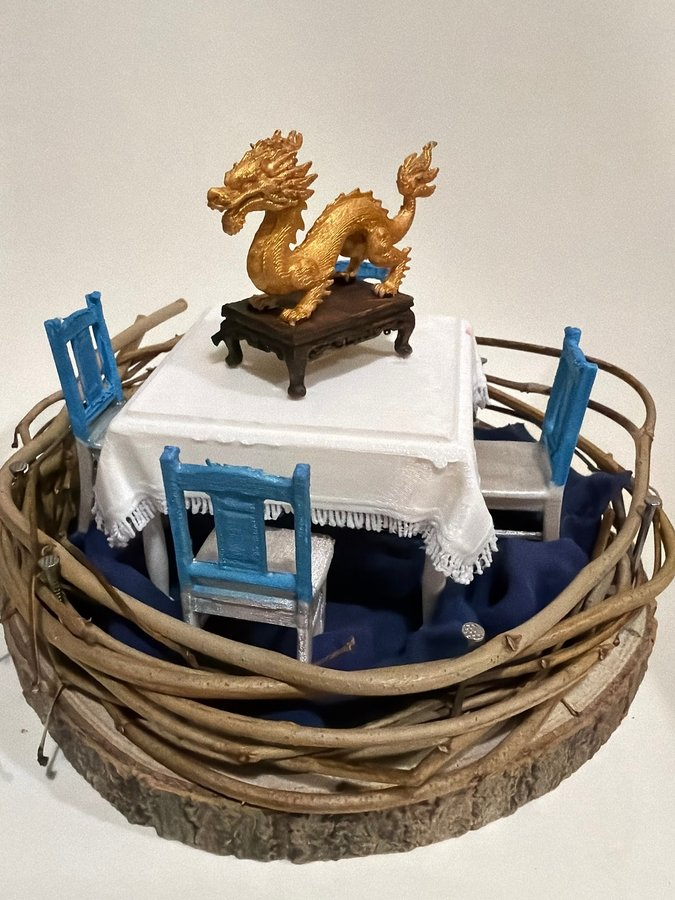

本網站為藝術科技項目之詮釋性預測（築巢 Weaving Home 藝術詮釋），並非心理／臨床診斷。


修正頂視圖以白色正方形桌做中心，四邊各有一張藍色背、銀色座位嘅木凳；桌上斜放一件金色龍形擺設。相片亦見到白色流蘇桌布、深藍色布地面、枝條外圈同木片基座。圖中家具排列比相片規整，實物有部分被桌布、枝條同拍攝角度遮住，但「四椅圍桌、金龍置中」嘅主體關係一致。
巢嘅頂視圖
修正頂視圖以白色正方形桌做中心，四邊各有一張藍色背、銀色座位嘅木凳；桌上斜放一件金色龍形擺設。相片亦見到白色流蘇桌布、深藍色布地面、枝條外圈同木片基座。圖中家具排列比相片規整，實物有部分被桌布、枝條同拍攝角度遮住，但「四椅圍桌、金龍置中」嘅主體關係一致。
屋企嘅人
四張椅圍住中央桌，視覺上邀請多人面向同一個中心；不過模型唔可以證明真實家庭有四位成員。藝術上，呢個巢較似一個重視圍坐、相聚同共享焦點嘅家居想像。金龍被抬高放喺桌中央，令日常家具同象徵物重疊，似乎表示「一齊坐低」同「共同珍視某樣嘢」同樣重要。
性格
如果以作品語言理解創作者，畫面帶出整齊、對稱、重儀式感但又保留鮮明玩味嘅取向。白桌布同四張同色椅建立秩序，金色龍則成為華麗焦點；外圍枝條粗糙自然，內部家具就精細上色。呢種對比可藝術性地讀成既珍惜傳統符號，又願意用簡單材料重新演繹，但唔應視為真實人格判定。
動機
作品似乎想建立一個「大家都望向同一處」嘅場景。四個座位令中心桌變成相遇點，流蘇桌布增加正式感，而龍形擺設令普通聚會有紀念或祝願意味。深藍布同枝條圍圈再將聚會空間包住。藝術上，動機可以理解為保存共同相處同集中注意力嘅感覺，而唔係重現一間完整飯廳。
需求
場景呈現出共享空間、清楚座位、中心焦點同外圍保護幾項需要。四張椅提供相等嘅參與位置；大桌面容納共同物件；白桌布柔化硬邊；木底、藍布同枝條外圈逐層建立承托及界線。呢啲係從佈局讀到嘅藝術需要，無法直接推論創作者實際家庭關係、宗教信念或生活條件。
經歷
可見作品由天然枝條、木片、布料同上色微型家具組成，顯示一段將不同質感材料組裝成單一場景嘅製作過程。椅腳同桌邊有手繪痕跡，桌布流蘇亦經細緻安排；龍形擺設放喺深色底座上，再置於正中。藝術上令人聯想到把聚會記憶縮成可觀看模型，但相片本身冇證據確認任何家庭歷史或文化經歷。
證據摘要
| 物件 | 推論 |
|---|---|
| 中央白色正方形桌同流蘇桌布 | 建立正式而柔和嘅共同中心。 |
| 四張藍背銀座木凳 | 形成四方圍坐關係，但唔等於四名真實住戶。 |
| 金色龍形擺設同深色底座 | 係視覺焦點，可帶出珍視、展示或祝願意象。 |
| 深藍色布地面 | 將內部聚會區同木底分隔。 |
| 交疊枝條、木片基座同金屬釘 | 以天然材料固定出圓形保護邊界。 |
信心同限制
對桌、四椅、金龍同外圈結構有高信心；對象徵含義及「屋企嘅人」只屬藝術推測。修正頂視圖同相片主體一致，但圖中省略咗流蘇、遮擋同家具實際角度。金龍可能純粹係裝飾，唔應據此斷定信仰、身份或人生背景；全文亦非診斷。